NIHAO IX: دور تدفقات الغاز الداخلة والخارجة في دفع تقلص وتمدد هالات المادة المظلمة الباردة
الملخص
نستخدم من محاكيات “التكبير الموضعي” الكوسمولوجية لتكوّن المجرات باستخدام شفرة الهيدروديناميكا الجسيمية الملسّاة gasoline لدراسة أثر العمليات الباريونية في ملامح الكتلة لهالات المادة المظلمة الباردة. تمتد الهالات في دراستنا من كتل المجرات القزمة () إلى كتل درب التبانة (). تُظهر محاكياتنا مجالاً واسعاً من استجابات الهالة، يتغير أساساً مع الكتلة، من التمدد إلى التقلص، مع تغيرات تصل إلى عامل في كتلة المادة المظلمة المحصورة عند 1 في المئة من نصف القطر الفيريالي. وتأكيداً لدراسات سابقة، ترتبط استجابة الهالة بالكفاءة المتكاملة لتشكل النجوم: . إضافة إلى ذلك، نورد ارتباطاً جديداً بتراصّ النظام النجمي: . ونقدّم صيغة تحليلية تعتمد على و لوصف استجابة هالات المادة المظلمة الباردة للعمليات الباريونية. ومن التنبؤات القابلة للاختبار رصدياً أنه، عند كتلة ثابتة، تختبر المجرات الأكبر تمدداً أكبر في هالاتها، في حين تختبر المجرات الأصغر تقلصاً أكبر في الهالة. يلتقط نموذج مبسط، يتألف من دورات تدفق داخلي أديباتي (يسبب التقلص) وتدفق غازي خارجي اندفاعي (يسبب التمدد)، هذا التنوع في استجابة الهالة المظلمة. ولحالة صافي التدفق الخارجي، أو تساوي كسري التدفق الداخلي والخارجي، ، يكون الأثر الكلي تمدداً، ويزداد التمدد بازدياد . أما في حالة صافي التدفق الداخلي، فيحدث التقلص عند الصغيرة (أنصاف الأقطار الكبيرة)، بينما يحدث التمدد عند الكبيرة (أنصاف الأقطار الصغيرة)، مستعيداً الظواهر المرئية في محاكياتنا. وتوفر هذه الانتظامات في عملية تكوّن المجرات خطوة نحو نموذج تنبؤي كامل لبنية هالات المادة المظلمة الباردة.
keywords:
– طرائق: عددية – مجرات: التكوّن – مجرات: هالات – مجرات: البنية – الكوسمولوجيا: النظرية – المادة المظلمة1 المقدمة
يُعد التنبؤ الدقيق بالخواص البنيوية لهالات المادة المظلمة الباردة (CDM) أحد الأهداف الأساسية للكوسمولوجيا الحديثة. وقد بُذل مقدار كبير من الجهد في دراسة الملامح الشعاعية لهالات CDM بوصفها دالة في كتلة الهالة والزمن والمعاملات الكوسمولوجية (مثلاً، Navarro et al., 1997; Bullock et al., 2001; Macciò et al., 2008; Zhao et al., 2009; Stadel et al., 2009; Navarro et al., 2010; Klypin et al., 2011; Dutton & Macciò, 2014; Diemer & Kravtsov, 2015; Ludlow et al., 2016). وإذا أُهملت آثار تبدد الغاز وتشكّل النجوم، فإن هذه المحاكيات عديمة التبدد تقدم تنبؤات متينة يمكن استخدامها لاختبار نموذج CDM، وربما دحضه. وأحد هذه التنبؤات أن هالات CDM تكاد تكون حرة المقياس ذات ملامح كثافة مركزية “مدببة”، ، مع .
تفضّل أرصاد المجرات الإهليلجية الضخمة، التي تنطوي على لايقين غير مهمل في طرح مساهمة النجوم، هذه الهالات المدببة على النوى () أو الهالات المتقلصة (Dutton et al., 2013b; Dutton & Treu, 2014; Sonnenfeld et al., 2015). غير أن أرصاد الأنظمة التي تهيمن عليها المادة المظلمة، حيث يكون طرح مساهمة الباريونات أقل إشكالاً، لم تجد بعد دليلاً مقنعاً على هذه القمم. بل تميل إلى تفضيل ميول كثافة داخلية أقل حدة في المجرات منخفضة الكتلة (مثلاً، de Blok et al., 2001; Swaters et al., 2003; Goerdt et al., 2006; Walker & Peñarrubia, 2011; Oh et al., 2011) وفي عناقيد المجرات (مثلاً، Newman et al., 2013).
تمثل هذه التباينات مشكلة قد تكون قاتلة لنموذج CDM، وقد حفّزت لذلك دراسة أنواع أخرى من المادة المظلمة تشبه CDM في سلوكها على المقاييس الكبيرة، لكنها تختلف على المقاييس الصغيرة. ومن الأمثلة الشائعة المادة المظلمة الدافئة (WDM؛ Pagels & Primack, 1982) والمادة المظلمة ذاتية التفاعل (SIDM؛ Spergel & Steinhardt, 2000). ويمكن أيضاً النظر في نماذج أكثر غرابة تنطوي على اقتران بين المادة المظلمة والطاقة المظلمة (مثلاً، Macciò et al., 2015).
بما أن الباريونات تشكل (Planck Collaboration et al., 2014) من الكتلة في الكون، فقد يبدو معقولاً من الرتبة الأولى افتراض أن للباريونات أثراً صغيراً فقط في بنية هالات المادة المظلمة. غير أنه ينبغي أخذ أن الباريونات والمادة المظلمة ليستا ممتزجتين على نحو متساو. تستطيع الباريونات تبديد طاقتها، مما يؤدي إلى نسب أعلى من الباريونات إلى المادة المظلمة في مراكز المجرات. وليس من النادر أن تهيمن الباريونات على ميزانية الكتلة داخل أنصاف أقطار نصف الضوء للمجرات (مثلاً، الشكل2 في Courteau & Dutton, 2015).
تُعرف عمليات باريونية يمكن أن تسبب كلاً من تمدد هالات المادة المظلمة وتقلصها عند أنصاف الأقطار الصغيرة. فإذا كان تراكم الباريونات على المجرة المركزية سلساً وبطيئاً، فينبغي أن تتقلص هالات المادة المظلمة أديباتياً (Blumenthal et al., 1986; Gnedin et al., 2004). ويمكن لهذه العملية أن تزيد كثافة هالات المادة المظلمة بمرتبة مقدار. وعلى النقيض، قد تسبب عمليات أخرى تمدد هالة المادة المظلمة: فقدان الكتلة السريع و/أو التغير الزمني في الكمون بسبب التغذية الراجعة من النجوم (Navarro et al., 1996; Read & Gilmore, 2005; Mashchenko et al., 2006; Pontzen & Governato, 2012; Macciò et al., 2012; El-Zant et al., 2016) أو النوى المجرية النشطة (AGN؛ Martizzi et al., 2012, 2013)؛ واندماجات الهالات الفرعية الأصغر وتجريدها بعد أن نفختها التغذية الراجعة النجمية (Dekel et al., 2003)؛ ونقل الطاقة/العزم الزاوي من الباريونات إلى المادة المظلمة عبر الاحتكاك الديناميكي بسبب الاندماجات الصغرى (El-Zant et al., 2001; Jardel & Sellwood, 2009; Johansson et al., 2009; Cole et al., 2011)، أو القضبان المجرية (Weinberg & Katz, 2002; Sellwood, 2008).
تؤدي التغذية الراجعة للمستعرات العظمى القادرة على تغيير الكمونات المجرية أدواراً مهمة أخرى في تكوّن المجرات. فهي التفسير الرئيسي لسبب ضآلة كفاءة تشكل المجرات في هالات ذات كتلة فيريالية مماثلة لدرب التبانة (MW) () وما دونها (مثلاً، Dekel & Silk, 1986; Hopkins et al., 2014; Wang et al., 2015). كما تطرد التغذية الراجعة النجمية المادة ذات العزم الزاوي المنخفض، مما يتيح تشكل مجرات أسية تهيمن عليها الأقراص (مثلاً، Maller & Dekel, 2002; Dutton, 2009; Brook et al., 2011; Brooks & Christensen, 2016). وبالمثل، تعد التغذية الراجعة من AGN التفسير الرئيسي لسبب ضآلة كفاءة تشكل المجرات في الهالات الأعلى كتلة من درب التبانة (مثلاً، Croton et al., 2006; Somerville et al., 2008).
على مقياس كتلة درب التبانة، وجدت المحاكيات الكوسمولوجية الهيدروديناميكية المبكرة، شبه دائماً، أن هالات المادة المظلمة تتقلص استجابة لتكوّن المجرات (مثلاً، Gustafsson et al., 2006; Romano-Díaz et al., 2008; Abadi et al., 2010; Tissera et al., 2010; Duffy et al., 2010). ومع ذلك، تجد هذه المحاكيات عموماً أن التقلص أضعف مما تتنبأ به نماذج Blumenthal et al. (1986) وGnedin et al. (2004). وثمة مشكلة قد تكون خطيرة في هذه المحاكيات، وهي أنها تبالغ في التنبؤ بالكتل النجمية للمجرات، ومن ثم فليس واضحاً مدى انطباقها على المجرات في الكون الحقيقي. أما المحاكيات الأحدث، ذات التغذية الراجعة الأقوى ومن ثم نسب كتلة نجمية إلى كتلة هالة أكثر واقعية، فتفيد بوجود تقلص ضعيف أو بعدم حدوث تغير في ملامح كتلة المادة المظلمة على مقاييس كتلة درب التبانة (Marinacci et al., 2014; Schaller et al., 2015).
على مقياس المجرات القزمة ()، قدم عدد من المجموعات المختلفة محاكيات هيدروديناميكية كوسمولوجية كاملة تتمدد فيها هالة المادة المظلمة (Mashchenko et al., 2008; Governato et al., 2012; Trujillo-Gomez et al., 2015; Chan et al., 2015; Tollet et al., 2016). وقد وُجد في هذه المحاكيات أن التغذية الراجعة النجمية تقود تغيراً زمنياً سريعاً (دون-ديناميكي) في الكمون. وتكتسب جسيمات المادة المظلمة التي تدور في مثل هذا الكمون طاقة، مما يؤدي إلى تمدد الهالة (Pontzen & Governato, 2012). ويشير استخدام شفرات هيدروديناميكية ونماذج دون-شبكية مختلفة إلى أن تمدد الهالة ليس أثراً عددياً مصطنعاً، ولا ناتجاً عن نمذجة محددة لفيزياء دون الشبكة.
يمكن التوفيق بين هذه النتائج المتعارضة ظاهرياً على مقاييس كتل القزم ودرب التبانة إذا كانت استجابة الهالة تعتمد، في المتوسط، على كتلة الهالة، ، أو الكتلة النجمية للمجرة، ، أو الكفاءة المتكاملة لتشكل النجوم،
| (1) |
وجد Di Cintio et al. (2014a) أن ميل كثافة المادة المظلمة الداخلي، ، يرتبط بـ على نحو أقوى من ارتباطه بكتلة المجرة أو الهالة. فعند الكفاءات المنخفضة جداً، لا يوجد تغير مع كما هو متوقع. ومع ازدياد كفاءة تشكل النجوم، يتناقص ليبلغ عند . وعند كفاءات أعلى من ذلك يزداد ، ليبلغ قيمة CDM البالغة عند كفاءة ، وقِيماً أكثر انحداراً تصل إلى عند كفاءات تقترب من الوحدة.
يعرض Di Cintio et al. (2014b) بارامتراً لملامح كثافة المادة المظلمة في محاكيات MaGICC (Stinson et al., 2013)، باستخدام دالة ذات خمسة معاملات. وكما هي الحال مع الميل الداخلي، وُجد أن المعاملات الأخرى تعتمد على . وهدف هذه الورقة مختلف قليلاً. فبدلاً من توصيف هالة المادة المظلمة في المحاكيات الهيدروديناميكية، نرغب في وصف كيفية تغير المادة المظلمة [بالنسبة إلى محاكيات المادة المظلمة فقط (DMO)] بوصف ذلك دالة في توزيع الكتلة الباريونية في مجرة. ونستخدم أيضاً محاكيات أكثر من MaGICC بمرتبة مقدار، مما يتيح لنا استكشاف تغير استجابة الهالة لعدة معاملات. وفي النهاية، نريد فهم الآليات الفيزيائية التي تسبب التقلص والتمدد ونمذجتها. فإذا أمكن إيجاد انتظام فيزيائي، فسيمكّن ذلك من تنبؤ أعم بملامح كثافة CDM في نماذج تكوّن المجرات شبه التحليلية وعند نمذجة أرصاد حركيات المجرات.
تُنظم هذه الورقة كما يأتي. تُعرض محاكيات تكوّن المجرات التي نستخدمها في §2. وتُعطى التغيرات في ملامح المادة المظلمة (بين المحاكيات الهيدروديناميكية وعديمة التبدد) في §3، بما في ذلك صيغة ملاءمة تحليلية تصف هذه النتائج في §3.3. ويعرض §4 نتائج استجابة الهالة في محاكياتنا ضمن سياق صياغة التقلص الأديباتي، ويتضمن نموذجاً مبسطاً لاستجابة الهالة ينطوي على دورات من التدفقات الداخلة والخارجة في §4.3. ونناقش نتائجنا في §5، ونقدم ملخصاً في §6.
2 المحاكيات
تأتي المجرات التي نحللها هنا من ثلاثة مشاريع: Numerical Investigation of a Hundred Astrophysical Objects (NIHAO؛ Wang et al., 2015)، وMaking Galaxies in a Cosmological Context (MaGICC؛ Stinson et al., 2013)، وMcMaster Unbiased Galaxy Simulations (MUGS؛ Stinson et al., 2010). وكما هو موصوف أدناه، يستخدم NIHAO وMaGICC نموذجاً متشابهاً لتشكل النجوم والتغذية الراجعة، ويكوّنان المقدار “الصحيح” من النجوم. أما مجرات MUGS فهي أعلى كفاءة مما ينبغي في تشكيل النجوم، لكننا نستخدمها لأنها تقدم حالة حدية عندما يكون تشكل النجوم عالي الكفاءة جداً، وتوفر صلة بأعمال المحاكاة المبكرة المشابهة. وتُعطى المعاملات الرئيسية التي تختلف بين المحاكيات في الجدول 1.
تغطي المجموعات الثلاث من المحاكيات مجال كتل الهالات عند انزياح أحمر . ويتكون NIHAO من 78 مجرة، وMaGICC من 11، وMUGS من 5. ويستخدم MaGICC وMUGS الشروط الابتدائية نفسها لهالات ذات كتلة شبيهة بدرب التبانة، ثم يعيدان تقييسها لمحاكاة مجرات أقل كتلة. أما NIHAO فيختار الهالات بحيث يكون التعيين شبه منتظم في لوغاريتم كتلة الهالة، ومستقلاً عن تاريخ التكوّن عند كتلة هالة معطاة.
كما نوقش في أوراق سابقة، يكوّن MaGICC وNIHAO بعضاً من أكثر المجرات المحاكاة واقعية حتى الآن، إذ يتوافقان مع نطاق واسع من خواص المجرات في الكونين المحلي والبعيد: تطور الكتل النجمية إلى كتل الهالات ومعدلات تشكل النجوم (Stinson et al., 2013; Wang et al., 2015)؛ أحجام الأقراص (Brook et al., 2012)، ومعدنيات الطور الغازي (Obreja et al., 2014)؛ وشكل هالة المادة المظلمة لدرب التبانة (Butsky et al., 2015)؛ ومحتوى الغاز البارد والحار (Stinson et al., 2015; Gutcke et al., 2016; Wang et al., 2016)؛ وأحجام Hi وعلاقة تولي-فيشر الباريونية (Brook et al., 2016)؛ وحركيات الأقراص النجمية (Obreja et al., 2016)؛ وميول كثافة المادة المظلمة الداخلية الضحلة في المجرات القزمة (Tollet et al., 2016)؛ وحل مشكلة “أكبر من أن تفشل” للمجرات القزمة الحقلية القريبة (Dutton et al., 2016). ومن ثم فهي توفر قوالب معقولة، وإن لم تكن وحيدة، لكيفية تأثير العمليات الباريونية في بنية هالات CDM.
2.1 الكوسمولوجيا
يستخدم MUGS وMaGICC كوسمولوجيا WMAP3 (Spergel et al., 2007) ذات معامل هابل = 73.0 Mpc-1، وكثافة المادة ، وكثافة الطاقة المظلمة ، وكثافة الباريونات ، وتطبيع طيف القدرة ، وميل طيف القدرة ، بينما يستخدم NIHAO كوسمولوجيا Planck (Planck Collaboration et al., 2014): معامل هابل = 67.1 Mpc-1، وكثافة المادة ، وكثافة الطاقة المظلمة ، وكثافة الباريونات ، وتطبيع طيف القدرة ، وميل طيف القدرة .
2.2 الهيدروديناميكا
تستخدم مجموعات المحاكاة الثلاث كلها شفرة الهيدروديناميكا الجسيمية الملسّاة (SPH) gasoline (Wadsley et al., 2004). ويستخدم MUGS وMaGICC النسخة الأصلية، بينما يستخدم NIHAO نسخة gasoline من Keller et al. (2014) التي تقلل تشكل الكتل وتحسن الامتزاج. وتستخدم كلتا نسختي gasoline المعالجة نفسها للتبريد عبر الهيدروجين والهيليوم وخطوط معدنية مختلفة في خلفية فوق بنفسجية مؤينة منتظمة كما وصفها Shen et al. (2010).
2.3 تشكل النجوم
تستخدم المحاكيات وصفة مشتركة لتشكل النجوم تتبع Stinson et al. (2006)، لكن بثلاث مجموعات مختلفة من المعاملات. تتشكل النجوم من غاز بارد () وكثيف (). وتُختار عشوائياً مجموعة فرعية من الجسيمات التي تحقق هذه المعايير لتكوين النجوم بناءً على معادلة تشكل النجوم الشائعة الاستخدام، . هنا، هي كتلة جسيم النجم المتكوّن، و هي الفاصل الزمني بين أحداث تشكل النجوم، و هي كفاءة تشكل النجوم، أي كسر الغاز الذي سيتحول إلى نجوم خلال زمن ديناميكي.
في MUGS تكون كثافة العتبة ، و، و Myr. وفي MaGICC وNIHAO تكون Myr، و، وتُضبط على الكثافة العظمى التي يمكن عندها حل اللااستقرارات التثاقلية . هنا هو عدد الجسيمات في نواة التنعيم في SPH، و هي كتلة جسيم الغاز، و هو تليين القوة لجسيمات الغاز. وتكون كثافة العتبة 9.3 cm-3 في MaGICC و10.6 cm-3 في NIHAO.
2.4 التغذية الراجعة
تتألف التغذية الراجعة النجمية الحرارية من حقبتين. تحدث الحقبة الأولى، “التغذية الراجعة النجمية المبكرة” (ESF)، قبل انفجار أي مستعرات عظمى. وهي تمثل الرياح النجمية والتأين الضوئي من النجوم الشابة الساطعة. وتتكون ESF من كسر من الفيض النجمي الكلي يُقذف من النجوم إلى الغاز المحيط ( إرج من الطاقة الحرارية لكل من السكان النجميين كلهم). ويُترك التبريد الإشعاعي مفعّلاً في ESF. ولا يتضمن MUGS هذه التغذية المبكرة (أي ). ويتبنى MaGICC ، وقد ضُبطت هذه القيمة لمطابقة تطور علاقة الكتلة النجمية مقابل كتلة الهالة (Behroozi et al., 2013) لمجرة ذات كتلة شبيهة بدرب التبانة مقدارها (Stinson et al., 2013). ويتبنى NIHAO . ويعود التغير الطفيف إلى ازدياد الامتزاج، وما يتبعه من ارتفاع كفاءة تشكل النجوم، في النسخة المحدّثة من gasoline المستخدمة في NIHAO.
تبدأ الحقبة الثانية بعد 4 Myr من تشكل النجم، حين تبدأ أول المستعرات العظمى بالانفجار. ولا تُعد إلا طاقة المستعرات العظمى تغذية راجعة في هذه الحقبة الثانية. وتُطبّق تغذية المستعرات العظمى الراجعة باستخدام صياغة موجة الانفجار الموصوفة في Stinson et al. (2006). وبما أن الغاز الذي يتلقى الطاقة كثيف، فإنه سيشعّها سريعاً بسبب كفاءة تبريده. ولهذا السبب، يُؤخّر التبريد للجسيمات داخل منطقة الانفجار مدة Myr. وتقذف النجوم كلاً من الطاقة، ، والمعادن في غاز الوسط بين النجمي المحيط بالمنطقة التي تشكلت فيها. يتبنى MUGS قيمة إرج لكل SN، ودالة كتلة ابتدائية (IMF) من Kroupa et al. (1993)، بينما يتبنى MaGICC وNIHAO قيمة إرج، وIMF من Chabrier (2003). وتؤدي دالة الكتلة الابتدائية المختلفة والطاقة المختلفة لكل مستعر أعظم إلى إطلاق طاقة أكبر بعامل لكل كتلة شمسية من النجوم المتشكلة في محاكيات MaGICC وNIHAO. وتكون هذه التغذية الراجعة قوية بما يكفي لتصحيح مشكلة فرط التبريد في محاكيات MUGS.
2.5 تعرف الهالات
حُددت الهالات الرئيسية في المحاكيات باستخدام كاشف الهالات الهجين MPI+OpenMP AHF22 2 http://popia.ft.uam.es/AMIGA (Gill et al., 2004; Knollmann & Knebe, 2009). يحدد AHF الكثافات الزائدة المحلية في حقل كثافة مُنعّم تكيفياً بوصفها مراكز هالات مرشحة. وتُعرّف الكتل الفيريالية للهالات بأنها الكتل داخل كرة تحتوي على مرة من كثافة المادة الحرجة الكونية، .
لكل محاكاة هيدروديناميكية محاكاة DMO مقابلة. ونستخدم الأسين “hydro” و“DMO” للإشارة إلى المعاملات من المحاكيات الهيدروديناميكية ومحاكيات DMO، على التوالي. فعلى سبيل المثال، يرمز إلى كتل الهالات بـ و. وبوجه عام لا تكون كتل الهالات للشروط الابتدائية نفسها متطابقة بين محاكيات hydro وDMO (الشكل 1). ولإجراء مقارنة ذات معنى بين ملامح هالات المادة المظلمة، أزلنا أزواج الهالات ذات الكتل المختلفة اختلافاً كبيراً، وهو ما يحدث مثلاً عندما تكون إحدى الهالات غير مسترخية بسبب اندماج كبير حديث، أو عندما لا يكون اندماج كبير قد حدث بعد في إحدى المحاكيات. ويؤدي فقدان الغاز بسبب التغذية الراجعة إلى اتجاه منهجي مع كتلة الهالة:
| (2) |
مع تشتت قدره 0.039 dex. وبسبب هذه الاختلافات، عندما نحسب كميات عند كسر من نصف القطر الفيريالي فإننا نختار نصف قطر محاكاة DMO لضمان أننا نستخدم نصف القطر الفيزيائي نفسه لكل زوج من المحاكيات. لاحظ أن الهالات منخفضة الكتلة فقدت كتلة أكبر مما ينتج عن مجرد إزالة الباريونات وفق الكسر الباريوني الكوني (الخط المنقط في الشكل 1)، مما يشير إلى إبطاء تواريخ تراكم الكتلة للهالات الهيدروديناميكية. وقد وُجدت نتائج مشابهة في محاكيات APOSTLE لنظائر المجموعة المحلية بواسطة Sawala et al. (2016).
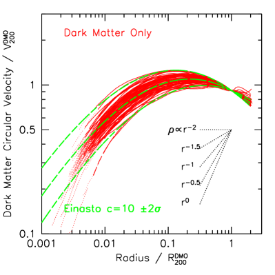
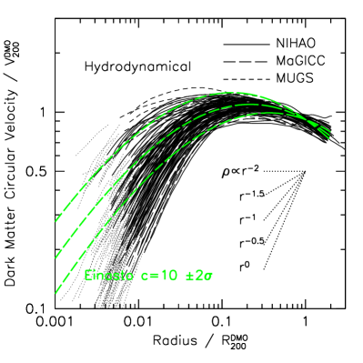
3 ملامح المادة المظلمة
3.1 ملامح الكتلة
تُعرض ملامح السرعة الدائرية للمادة المظلمة، ، لمحاكياتنا الكوسمولوجية في الشكل 2. وقد قيس نصف القطر والسرعات إلى نصف القطر الفيريالي، ، والسرعة الفيريالية، ، لمحاكيات DMO. وبالإضافة إلى ذلك، قسنا سرعات محاكيات DMO بالعامل ، حيث ، لتقريب مساهمة الباريونات في ملمح سرعة DMO. وتعرض اللوحة اليسرى نتائج المحاكيات عديمة التبدد، بينما تعرض اللوحة اليمنى نتائج المحاكيات الهيدروديناميكية. وفي كلتا اللوحتين، تعرض الخطوط المصمتة محاكيات NIHAO، بينما تعرض الخطوط المتقطعة محاكيات MaGICC وMUGS. ولا تُعرض هذه الخطوط إلا لأنصاف الأقطار التي يكون عندها ملمح السرعة الدائرية متقارباً إلى 10% وفق معايير التقارب لدى Power et al. (2003)، بعد تعديلها من Schaller et al. (2015). وتعرض الخطوط المنقطة ملامح السرعة نزولاً إلى طول تليين جسيمات المادة المظلمة، وهو عادة أصغر بمرتين إلى ثلاث مرات من نصف قطر التقارب.
كما هو متوقع، تصف ملامح Einasto محاكيات DMO وصفاً جيداً (Einasto, 1965)،
| (3) |
مع وتركيزات تقابل مجال الموجود في محاكيات -body كبيرة الحجم (Dutton & Macciò, 2014). غير أنه عند أصغر أنصاف الأقطار المحلولة، تمتلك كثير من المحاكيات الهيدروديناميكية ملامح كثافة للمادة المظلمة ذات ميول داخلية أضحل من قيمة CDM الاسمية البالغة . كما توجد بوضوح درجة أوسع بكثير من التنوع في ملامح المادة المظلمة في المحاكيات الهيدروديناميكية. فعلى سبيل المثال، عند 1% من نصف القطر الفيريالي، تظهر محاكيات DMO تغيراً مطلقاً في السرعة الدائرية للمادة المظلمة لا يتجاوز عاملاً 2، في حين تُظهر المحاكيات الهيدروديناميكية انتشاراً بمرتبة مقدار.
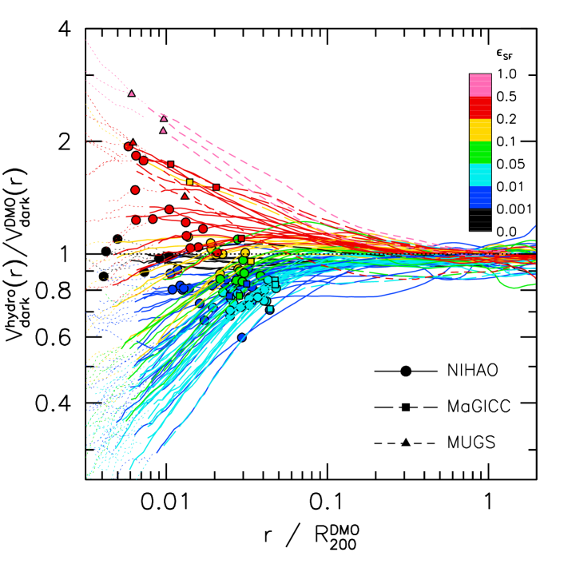
3.2 استجابة الهالة لتكوّن المجرات
يظهر التغير في ملامح المادة المظلمة بوضوح أكبر في الشكل 3. يعرض المحور النسبة بين السرعة الدائرية للمادة المظلمة في المحاكيات الهيدروديناميكية، ، وتلك في محاكيات DMO، . وقد قيسَت سرعات DMO بالعامل ، بحيث إن نسبة مقدارها 1 تعني عدم حدوث تغير في ملمح كتلة المادة المظلمة. ومن ثم تكون نسبة الكتلة . وبالنسبة إلى ملمح كثافة على شكل قانون قدرة ، تسلك الكتلة المحصورة سلوك ، ومن ثم فإن نسبة السرعة تقابل تقريباً التمدد الشعاعي (أو عامل التقلص). فعلى سبيل المثال، تعني نسبة سرعة 0.5 أن قشور المادة المظلمة تمددت بعامل .
تعرض الخطوط المصمتة محاكيات NIHAO، بينما تعرض الخطوط المتقطعة محاكيات MaGICC وMUGS. وتعرض النقاط موقع نصف قطر نصف الكتلة النجمي ثلاثي الأبعاد 3D: NIHAO (دوائر)، وMaGICC (مربعات)، وMUGS (مثلثات). وتمتد محاكيات MaGICC وNIHAO على مجال متشابه من استجابة الهالة، بينما تقع محاكيات MUGS بين الأكثر تقلصاً. ويبين هذا، من بين أمور أخرى، أن دور الهيدروديناميكا (التي حُسنت في NIHAO مقارنة بـ MaGICC) ثانوي قياساً إلى قوة التغذية الراجعة.
تكون التغيرات أكبر عند أنصاف الأقطار الأصغر، سواء عندما تتمدد الهالات أو تتقلص. وعند أنصاف أقطار أكبر من من نصف القطر الفيريالي، لا يطرأ إلا تغير قليل على ملمح المادة المظلمة. وهذا أمر متوقع، لأن أنصاف أقطار نصف الكتلة للنجوم تقع عادة بين 0.5 و 5 في المئة من نصف القطر الفيريالي. وعلى هذه المقاييس، حيث تتكثف الباريونات وتتشكل النجوم، يوجد مجال واسع من استجابات الهالة. وعند 1% من نصف القطر الفيريالي تزداد السرعة الدائرية للهالة وتنقص بما يصل إلى عامل ، وهو ما يقابل تغيراً في الكتلة المحصورة بعامل . ومن الواضح أن الباريونات يمكن أن تؤثر تأثيراً كبيراً في بنية هالة المادة المظلمة.
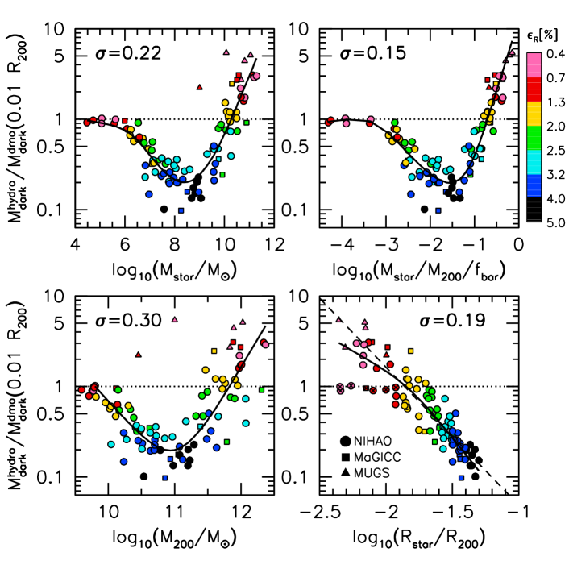
تُبرز هذه الرسمة أيضاً أهمية الدقة المكانية. فمن أجل رؤية تمدد أو تقلص كبير، تحتاج المحاكيات إلى القدرة على حل مقاييس أصغر كثيراً من من نصف القطر الفيريالي. وتحل محاكياتنا من نصف القطر الفيريالي عبر ثلاث رتب مقدار في كتلة الهالة. غير أن المحاكيات كبيرة الحجم مثل EAGLE (Schaye et al., 2015) وILLUSTRIS (Vogelsberger et al., 2014) لا تمتلك دقة كافية إلا للهالات ذات كتلة درب التبانة وما فوقها.
باستخدام محاكيات MaGICC وMUGS، وجد Di Cintio et al. (2014a) أن الميل اللوغاريتمي لملمح كثافة المادة المظلمة المقاس بين 1 و2% من نصف القطر الفيريالي يرتبط بكفاءة تشكل النجوم، . لذلك نرمز الخطوط في الشكل 3 لونياً وفقاً لـ . ونحدد أربعة سلوكيات نوعية في استجابة الهالة:
-
•
(A) لا تغير في ملمح المادة المظلمة ().
-
•
(B) تمدد عند جميع أنصاف الأقطار، مع تمدد أكبر عند أنصاف الأقطار الأصغر () وتمدّد أعظمي عند .
-
•
(C) تقلص عند أنصاف الأقطار الكبيرة مع قيمة عظمى قرب ، مقروناً بتمدد عند أنصاف الأقطار الصغيرة ().
-
•
(D) تقلص عند جميع أنصاف الأقطار مع تقلص أكبر عند أنصاف الأقطار الأصغر ().
تجد التقديرات الرصدية من مطابقة وفرة الهالات والعدسية التثاقلية الضعيفة أن القيمة العظمى لـ تقع عند كتلة هالة (مثلاً، Conroy & Wechsler, 2009; Moster et al., 2010; Leauthaud et al., 2012; Hudson et al., 2015). ومن ثم يرجح أن تحدث الحالة (D) عند قمة كفاءة تشكل النجوم. وبما أن هناك تشتتاً مقداره dex في الكتلة النجمية عند كتلة هالة ثابتة (More et al., 2011; Behroozi et al., 2013; Reddick et al., 2013)، فإن المجرات ذات ممكنة أيضاً في هالات أعلى وأدنى من عندما تتشتت صعوداً في الكفاءة. وتعد درب التبانة مثالاً لمجرة ذات كفاءة عالية في تشكل النجوم قدرها . كما أن المجرات ذات تشكل نجوم كفء جداً ممكنة أيضاً مع انحرافات في هالات ، بحيث إن محاكيات MUGS “مفرطة التبريد” قد توفر حتى قالباً لمجموعة فرعية من سكان المجرات. وعند النهاية منخفضة الكتلة في محاكياتنا، يُتوقع أن تستضيف هالات كتلتها مجرات ذات كتلة نجمية بحيث . ومن المحتمل جداً أن يكون التشتت في كبيراً في هذه الهالات منخفضة الكتلة (Wang et al., 2015; Garrison-Kimmel et al., 2016)، ومن ثم نتوقع أن تُظهر بعض الهالات منخفضة الكتلة عدم تغير (الحالة A)، بينما تُظهر أخرى تمدداً (الحالة B).
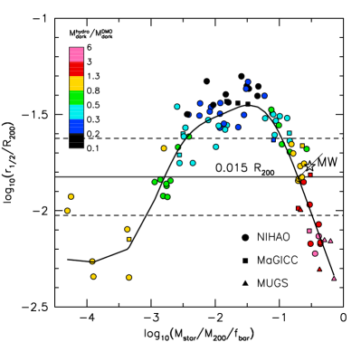
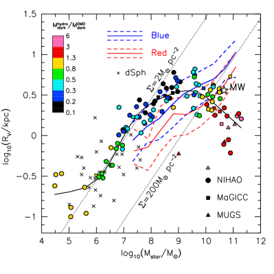
3.3 الارتباطات بين استجابة الهالة ومعاملات المجرات
لإظهار الاتجاه مع بصورة أوضح، يعرض الشكل 4 نسبة كتلة المادة المظلمة (أي مربع نسبة سرعة المادة المظلمة) المقاسة عند 1 في المئة من نصف القطر الفيريالي مقابل ، وكذلك مقابل كتلة الهالة، ، والكتلة النجمية، ، ومعامل التراص، ، وهو النسبة بين حجم نصف الكتلة النجمي ثلاثي الأبعاد 3D ونصف القطر الفيريالي للهالة. ولكل علاقة يعرض الخط المصمت وسيطاً مستوفى بسلاين، ويُعطى الانحراف المعياري الكلي حول كل علاقة. ومن بين هذه المعاملات الأساسية الأربعة، تُعد كفاءة تشكل النجوم أفضل متنبئ باستجابة الهالة ()، يليها التراص ()، ثم الكتلة النجمية ()، ثم كتلة الهالة ().
على الرغم من وجود اتجاهات واضحة مع الكتلة النجمية وكتلة الهالة في محاكيات NIHAO (دوائر) وMaGICC (مربعات)، تُظهر محاكيات MUGS (مثلثات) أن الكتلة النجمية أو كتلة الهالة وحدهما ليستا المعاملين المحركين لاستجابة الهالة. فأصغر محاكاتين كتلة في MUGS لهما كتلتا هالة قدرهما و وهالات متقلصة بشدة. وعلى هذه المقاييس الكتلية تمتلك محاكيات NIHAO استجابة هالة معاكسة، أي تمددًا قوياً. وبالمثل فإن الكتل النجمية في محاكيات MUGS هي و. وعلى هذه المقاييس الكتلية تمتلك محاكيات NIHAO كتل هالة مظلمة أخفض بعامل 5 داخل 1% من نصف القطر الفيريالي. وفي المقابل، عندما ننظر إلى كفاءة تشكل النجوم (اللوحة العليا اليمنى)، تتبع محاكيات MUGS وNIHAO العلاقة نفسها.
من وجهة نظر نظرية، يتوقع المرء أن تعتمد استجابة الهالة ليس فقط على خواص شمولية مثل ، بل أيضاً على خواص محلية مثل توزيع الباريونات. ففي صياغة التقلص الأديباتي (Blumenthal et al., 1986) ومتغيراتها (Gnedin et al., 2004; Abadi et al., 2010; Dutton et al., 2015)، عند كتلة هالة وكتلة نجمية ثابتتين، تؤدي توزيعات الباريونات الأكثر تراصاً إلى تقلص أكبر. أما في حالة التمدد، فالنجوم عديمة التصادم، ومن ثم يُتوقع أن تتمدد مع المادة المظلمة. ولذلك فإن التوزيع النجمي المتمدد هو بصمة لتمدد الهالة المظلمة.
تُظهر اللوحة السفلى اليمنى في الشكل 4 بالفعل ارتباطاً قوياً بين تراص التوزيع النجمي، ، واستجابة الهالة، إذ تمتلك التوزيعات النجمية الأكثر امتداداً تمدداً أقوى. ورُمزت النقاط في اللوحات الأربع كلها لونياً حسب . وهذا يبين أنه عند كتلة هالة وكتلة نجمية وكفاءة تشكل نجوم ثابتة، تمتلك المجرات الأصغر تقلصاً أكبر، والمجرات الأكبر تمدداً أكبر. ويفشل هذا الارتباط في حالة عدم التغير عند الكتل النجمية/كفاءات تشكل النجوم المنخفضة (). وباستبعاد هذه الحالات (المعلّمة بحرف x) وملاءمة خط مستقيم نحصل على
| (4) |
حيث ، و . ويبلغ التشتت حول هذه العلاقة . ومن ثم فإن تضمين توزيع النجوم ينبغي أن يحسن القدرة التنبؤية لنموذج استجابة الهالة القائم على معاملات المجرة والهالة الشمولية.
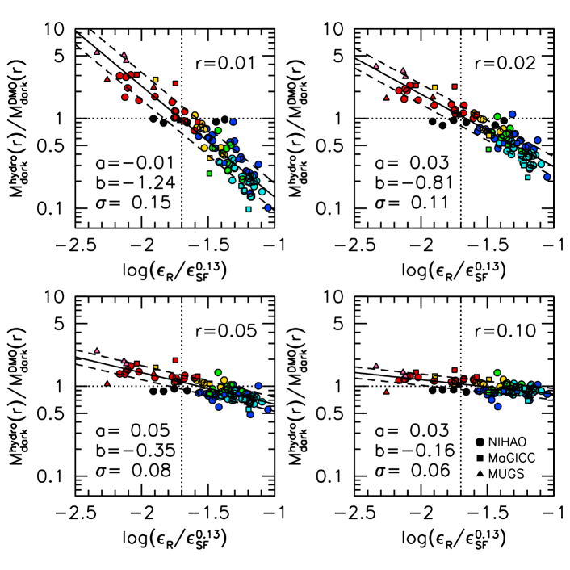
3.4 استجابة الهالة بوصفها دالة في كفاءة تشكل النجوم وتراص المجرة
لتحديد الأهمية النسبية لكفاءة تشكل النجوم وتراص المجرة، يعرض الشكل 5 ارتباطات بين الحجم والكتلة النجمية واستجابة الهالة. هنا تُعرّف استجابة الهالة بأنها نسبة كتلة المادة المظلمة عند 1 في المئة من نصف القطر الفيريالي. وتعرض اللوحة اليسرى العلاقة بين و مع ترميز النقاط لونياً بحسب استجابة الهالة. وتعرض اللوحة اليمنى الحجم القابل للرصد مباشرة (نصف الضوء ثنائي الأبعاد 2D) مقابل الكتلة النجمية. وفي كلتا اللوحتين نعرض درب التبانة باستخدام طول قياس قرصي () kpc و من Bovy & Rix (2013) وكتلة هالة مقدارها dex (Peñarrubia et al., 2016, والمراجع الواردة فيه). وفي اللوحة اليسرى نعرض dex المستنتجة بواسطة Kravtsov (2013) باستخدام مطابقة وفرة الهالات. وفي اللوحة اليمنى نعرض أرصاد أنصاف أقطار نصف الضوء ثنائية الأبعاد 2D للمجرات الحمراء والزرقاء وdSph من Baldry et al. (2012).
ومن اللافت أن المجرات ذات استجابة الهالة المتشابهة تقع في أجزاء متشابهة من فضاء المعاملات. وكما رأينا في الشكل 4 عند ثابتة، يوجد اتجاه واضح يجعل المجرات الأكبر (عند كفاءة تشكل نجوم أو كتلة ثابتة) تمتلك هالات أكثر تمدداً، والمجرات الأصغر تمتلك هالات أكثر تقلصاً. غير أنه عند ثابتة (أو حجم ثابت) يوجد فرعان لهما (أو كتلة) مختلفة لاستجابة الهالة نفسها. ومن ثم لا يحدد التراص وحده ولا كفاءة تشكل النجوم وحدها استجابة الهالة.
إذا لائمنا خطوطاً لهالات ذات استجابة متشابهة حيث توجد قاعدة كافية، نجد ميولاً مقدارها لـ مقابل و لـ مقابل . وتمتلك الكثافة السطحية الثابتة [] ميلاً مقداره 0.5 في مستوى مقابل ، ومن ثم فإن كثافة النجوم ليست معاملاً أكثر أساسية. ويتضح ذلك بجلاء في المجرات القزمة، التي تمتلك كثافة سطحية شبه ثابتة مقدارها ، بينما تتغير استجابة الهالة من عدم تغير عند الكتل النجمية المنخفضة () إلى تمدد عند الكتل النجمية العالية .
بعد إزالة هذه الاتجاهات، يعرض الشكل 6 استجابة الهالة المقاسة عند أنصاف أقطار مختلفة مقابل . وعند جميع أنصاف الأقطار، ، تلائم العلاقة جيداً بقانون قدرة في فضاء مقابل . ويعتمد ميل هذا الارتباط، ، ونقطة الصفر، ، والتشتت، ، على نصف القطر الذي تقاس عنده نسبة الكتلة، . ومن ثم تصف المعادلة الآتية استجابة الهالة عند أي نصف قطر بوصفها دالة في و:
| (5) |
يُعرض اعتماد و و على نصف القطر في الشكل 7. ونلائم العلاقات بالدوال الآتية. قانون قدرة مزدوج بميول و:
| (6) |
ودالة سيغمويدية تتغير بسلاسة بين قيمة تساوي و:
| (7) |
ويُعطى الميل بوصفه دالة في نصف القطر، ، بالعلاقة
| (8) |
وتُعطى نقطة الصفر بوصفها دالة في نصف القطر، ، بالعلاقة
| (9) |
ويُعطى تشتت 1 بالعلاقة
| (10) |
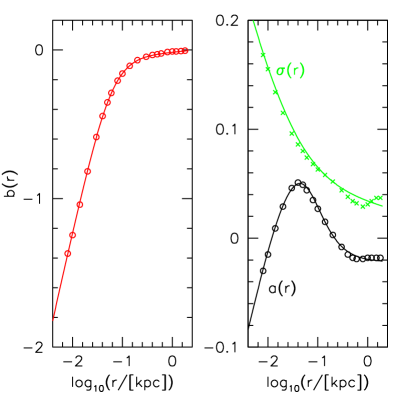
تنهار هذه التنبؤات عند كفاءات تشكل النجوم المنخفضة ()، لذلك نطبق دالة S على استجابة الهالة (المعادلة 5) وعلى التشتت (المعادلة 10) مع . وتؤول هذه الدالة إلى الصفر عندما ، لذلك نضيف تشتتاً قدره 0.03 dex تربيعياً.
يعرض الشكل 8 مقارنة بين استجابة الهالة في محاكيات NIHAO (خطوط سوداء مصمتة) وما تتنبأ به ملاءمتنا التحليلية (خط متقطع ومنطقة مظللة) لعينة فرعية تمثيلية من الهالات. ومن المطمئن أن النموذج، الذي عُيّر على هذه المحاكيات، يستعيد بالفعل تنوع استجابات الهالة.
3.5 الدلالات
إذا صح نموذج استجابة الهالة هذا خارج مجال و الذي لدينا فيه محاكيات، فهناك بعض الدلالات المثيرة للاهتمام. يبين الشكل 5 أن محاكياتنا لا تغطي المجال الكامل للمجرات المرصودة في مستوى الحجم مقابل الكتلة. فعند كتل نجمية بين و تفتقر محاكياتنا إلى مجرات صغيرة، بينما عند الكتل العالية تفتقر محاكياتنا إلى مجرات كبيرة. ويعود جزء من هذا التباين إلى أن المجرات الحمراء منخفضة الكتلة تكون، على نحو تفضيلي، مجرات تابعة، في حين أن كل مجرات NIHAO التي نعرضها مركزية. وبالمقارنة مع المجرات الزرقاء المرصودة فقط، تنزاح محاكيات NIHAO إلى أعلى بمقدار عند كتلة نجمية ، وتنزاح إلى أسفل بمقدار عند كتلة نجمية . ويمكن تتبع أحجام نصف الضوء الصغيرة إلى انتفاخات مفرطة التراص، لا إلى أقراص أصغر مما ينبغي. ونلاحظ أن سمة مشابهة تظهر في محاكيات EAGLE (Crain et al., 2015) ذات كفاءة التغذية الراجعة النجمية الثابتة (كما نتبنى هنا). ويتمثل حلهم في زيادة كفاءة التغذية الراجعة النجمية في الغاز الكثيف، وخفض الكفاءة في الغاز منخفض الكثافة، لتصحيح خسائر الطاقة الإشعاعية العددية. وعلى الرغم من أن مجراتنا الضخمة أصغر من المجرات المرصودة النموذجية، فإنها تتداخل فعلياً مع درب التبانة، المعروف بأنه صغير على نحو غير نموذجي (Hammer et al., 2007).
إن ميل علاقة الحجم-الكتلة يقارب ميل استجابة الهالة الثابتة، أي . ومن ثم نتنبأ بأن مجرة حلزونية نموذجية (ذات ) ستمتلك تمدداً خفيفاً في الهالة، وأن مجرة منزاحة بمقدار نحو أحجام كبيرة ستمتلك تمدداً قوياً، بينما لن يحدث تغير في مجرة صغيرة بمقدار (مثل درب التبانة). كما أن مجرة نموذجية يهيمن عليها الانتفاخ لن تُظهر تغيراً في هالة المادة المظلمة. ويتباين ذلك مع الاعتماد القوي على الكتلة الموجود في محاكيات NIHAO وMaGICC هنا وفي أعمال سابقة (Di Cintio et al., 2014a, b; Tollet et al., 2016). ويمكن تتبع الاعتماد القوي على الكتلة إلى الاعتماد القوي للتراص على كفاءة تشكل النجوم.
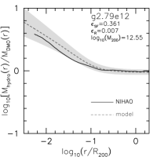
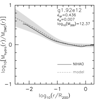
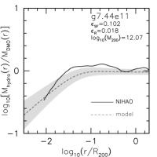
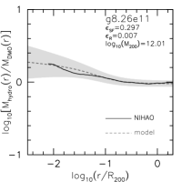
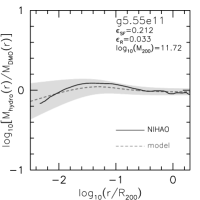
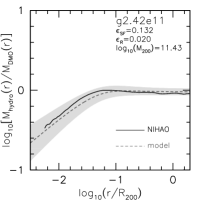
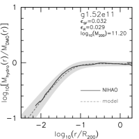
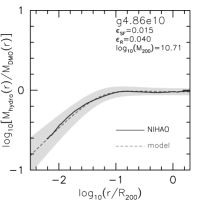
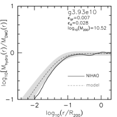
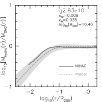
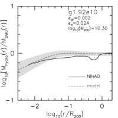
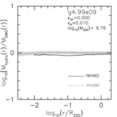
4 نحو نموذج فيزيائي لاستجابة الهالة
نحوّل الآن اهتمامنا إلى نموذج فيزيائي لاستجابة هالات CDM لعمليات تكوّن المجرات الباريونية. ويُعطى تحليل أكثر تفصيلاً لهذا النموذج المبسط في Dekel وآخرون (قيد الإعداد).
4.1 صياغة التقلص الأديباتي
إذا أُعطي ملمح كتلة محصورة كروياً من محاكاة DMO، ، (حيث تشير إلى الابتدائي)، فإننا نرغب في اشتقاق ملمح المادة المظلمة النهائي، ، بعد تحديد ملمح الكتلة الباريونية النهائي، . ويُفترض أن ملمح الكتلة الابتدائي ينقسم إلى باريونات ومادة مظلمة وفق الكسر الباريوني الكوني: ، و .
النموذج القياسي لاستجابة الهالة هو التقلص الأديباتي الذي قدمه Blumenthal et al. (1986). وإلى جانب الثبات الأديباتي، يفترض هذا النموذج التناظر الكروي، والتقلص المتماثل، ومدارات جسيمية دائرية، مما يؤدي إلى حفظ العزم الزاوي، ومن ثم ، حيث هي الكتلة الكلية المحصورة داخل نصف القطر . وبافتراض إضافي أن قشور المادة المظلمة لا تتقاطع: ، حيث هو نصف القطر “الابتدائي” لقشرة من المادة المظلمة، و هو نصف القطر “النهائي” لهذه القشرة بعد تضمين آثار العمليات الباريونية، نحصل على
| (11) |
لذلك، عند إعطاء و، يمكن حل المعادلة (11) من أجل الرسم بين و، ومن ثم اشتقاق ملمح المادة المظلمة النهائي.
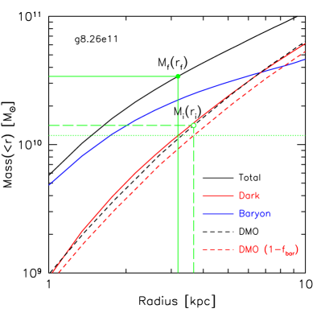
يُعرض مثال لكيفية حساب أنصاف الأقطار والكتل في إحدى محاكياتنا في الشكل 9. وتعرض الخطوط المصمتة ملامح الكتلة الكلية (أسود)، والمادة المظلمة (أحمر)، والباريونية (أزرق) للمحاكاة الهيدروديناميكية للهالة g8.26e11. وتعرض الخطوط المتقطعة ملامح الكتلة الكلية (أسود) وكتلة المادة المظلمة الضمنية (أحمر) لمحاكاة المادة المظلمة فقط (DMO) المقابلة. ويعرض الخط الأخضر الأفقي المنقط كتلة اعتباطية، تتقاطع مع ملمح كتلة المادة المظلمة الهيدروديناميكي (“النهائي”) عند ومع ملمح كتلة المادة المظلمة في DMO (“الابتدائي”) عند . ثم تكون و هما الكتلتان الكليتان المحصورتان عند و ، على التوالي. وتُغيّر الكتلة الاعتباطية من أصغر كتلة محلولة إلى الكتلة الفيريالية للحصول على ملمح لـ و. ويمكننا بعد ذلك مقارنة العلاقة بين و من المحاكيات لاختبار نموذج التقلص الأديباتي.
4.2 استجابة الهالة في محاكيات NIHAO
يعرض الشكل 10 مسارات محاكياتنا في مستوى مقابل . وتُرمز نتائج كل زوج من المحاكيات لونياً بحسب كفاءة تشكل النجوم، وتُرسم نزولاً إلى نصف قطر التقارب لمحاكاة DMO. ويعرض المحور عامل “التقلص”، بينما يمكن عادة ربط المحور بنصف القطر ربطاً رتيباً. وتتنبأ صيغة التقلص الأديباتي (المعادلة 11) بأن ، وهو ما يشار إليه بالخط القطري المنقط في الشكل. أما عدم التغير في ملمح المادة المظلمة فيقابل الخط الأفقي المنقط عند .
النقطة الأولى الظاهرة من الشكل 10 هي أن استجابة الهالة ليست أديباتية في أي من محاكياتنا، مؤكدة بذلك دراسات سابقة (Gnedin et al., 2004; Abadi et al., 2010; Pedrosa et al., 2010; Dutton et al., 2015). والنقطة الثانية هي أن استجابة الهالة لا تتبع مساراً واحداً. غير أنه، بخلاف هذه الدراسات التي وجدت تقلصاً فقط مع تغير خفيف في استجابة الهالة، تُظهر محاكياتنا تنوعاً أوسع بكثير في استجابات الهالة، بما في ذلك التمدد. وكما هو متوقع من الشكل 3، ترتبط استجابة الهالة بقوة بكفاءة تشكل النجوم. ويُعرض ذلك بوضوح أكبر في الشكل 11، الذي يبين استجابة الهالة لهالات NIHAO (خطوط مصمتة) مجمعة في حاويات بحسب كفاءة تشكل النجوم. وهنا تُرسم الخطوط من 0.01 إلى .
يزداد الانحراف عن التقلص الأديباتي مع تناقص : فالهالات ذات كفاءة تشكل النجوم الأدنى تمتلك أعلى (أي تقلصاً أقل / تمدداً أكبر) عند ثابت. وتعرض الخطوط الطويلة المتقطعة في اللوحة اليسرى من الشكل 11 استجابة الهالة التي يتنبأ بها نموذج Gnedin et al. (2004). وينتج هذا النموذج تقلصاً أضعف للمجرات ذات الأقل، بل وتمددًا خفيفاً جداً عند المنخفضة جداً؛ إلا أنه يبالغ في التنبؤ بالتقلص عند جميع كفاءات تشكل النجوم. ويكون التباين أكبر عند المنخفضة (أي أنصاف الأقطار الصغيرة). وتعرض الخطوط القصيرة المتقطعة نموذج Abadi et al. (2010)، الذي يمتلك مساراً ثابتاً في مستوى استجابة الهالة. ويقترب هذا النموذج من نتائج محاكياتنا عند ، لكنه يفشل في مطابقة الهالات ذات الأقل.
تعرض الخطوط المنقطة في اللوحة اليمنى مسارات لقيم مختلفة من . وهذه الصيغة مفيدة في نماذج تكوّن المجرات شبه التجريبية (Dutton et al., 2007) ونماذج كتلة منحنيات الدوران (Dutton et al., 2013a)، إذ يمكن، بمعامل وحيد هو ، الانتقال بسلاسة بين التقلص الأديباتي ()، وعدم التغير ()، والتمدد (). إلا أنه، على الرغم من مرونتها، لا تلتقط هذه الدالة تنوع استجابة الهالة المرئي في محاكياتنا. ولا تستعيد استجابة الهالة على نحو موثوق إلا لـ ، كما أنها تفتقر إلى تفسير فيزيائي مباشر. ويحفزنا فشل النماذج وصيغ الملاءمة السابقة هذه على اشتقاق نموذج مبسط جديد لاستجابة الهالة.
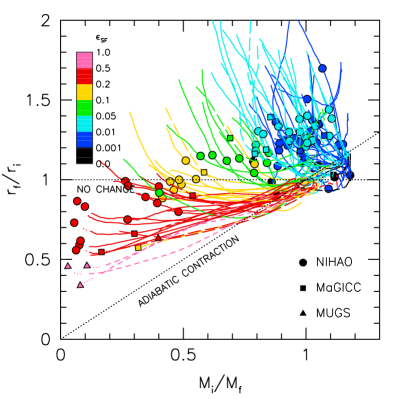
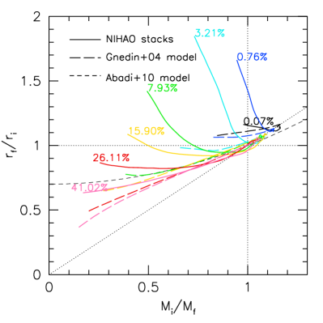
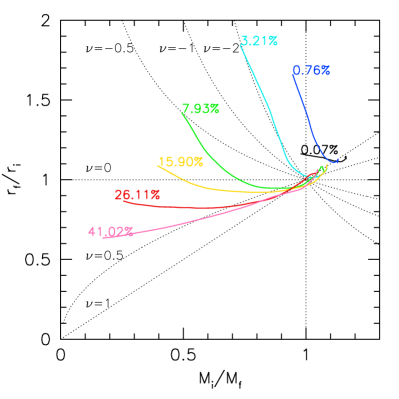
4.3 نموذج مبسط لتقلص الهالة وتمددها
نناقش الآن نموذجاً مبسطاً لاستجابة الهالة سيكون مفيداً في توجيه النقاش حول الآليات الفيزيائية الفاعلة. ونؤكد هنا أننا نستخدم نموذج قشرة معزولة مبسطاً، وهو تبسيط خشن. ويُعطى تحليل لملمح كثافة هالة كامل وللخطأ الناجم عن تقريب القشرة في Dekel وآخرون (قيد الإعداد).
ننظر في عمليتين فيزيائيتين تغيران بنية الهالة المظلمة: تدفق داخلي أديباتي للغاز وتدفق خارجي اندفاعي للغاز. ويعرض الشكل 12 مجموعة من الحالات: تدفق خارجي صرف (أعلى اليسار)؛ وصافي تدفق خارجي (أعلى الوسط)؛ وتدفق داخلي وخارجي متساويان (أعلى اليمين)؛ وتدفق داخلي صرف (أسفل اليسار)؛ وصافي تدفق داخلي (أسفل الوسط واليمين). ويعرض الشكل 13 مسارات هذه النماذج، باستخدام نظام الألوان نفسه، في مستوى استجابة الهالة الكلاسيكي: مقابل .
4.3.1 التدفق الداخلي الأديباتي
لننظر في قشرة كروية كتلتها ونصف قطرها ، ذات مدارات دائرية. لنفترض أن غازاً كتلته ينهال أديباتياً إلى مركز القشرة. تصبح الكتلة الكلية الآن . وباستخدام الثابت الأديباتي، يُعرف أن القشرة تتقلص إلى نصف قطر جديد، ، يتناسب عكسياً مع نسبة الكتلة (Blumenthal et al., 1986):
| (12) |
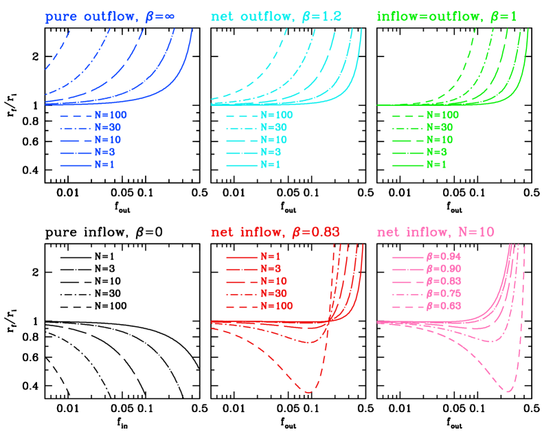
4.3.2 التدفق الخارجي الاندفاعي
لنفترض أن غازاً كتلته يُزال آنياً من مركز الكرة. وفي تقريب الاندفاع، تبقى السرعات الآنية كما كانت قبل التدفق الخارجي:
| (13) |
أي إن النظام يكون مؤقتاً خارج الاتزان الفيريالي. ومن ثم تكون الطاقة الكلية (الكامنة زائد الحركية) مباشرة بعد إزالة الغاز
| (14) |
مع المعطاة أعلاه. ثم تتمدد القشرة مع حفظ الطاقة إلى نصف قطر جديد في اتزان فيريالي جديد (الطاقة الكلية = نصف الطاقة الكامنة)، فتكون الطاقة
| (15) |
وبمساواة الطاقات وإدخال نحصل على
| (16) |
في الحالة القصوى لفقدان نصف الكتلة، ، نحصل على ، أي إن النظام يصبح غير مقيد. وفي حد ، وإلى الرتبة الأولى في ، . لذلك إلى الرتبة الأولى في يكون الأثر هو نفسه كما في تمدد أديباتي، والذي كان سيعطي . غير أن الرتب الأعلى في تجعل التمدد الاندفاعي أقوى من الحالة الأديباتية.
يمكن أن يُبيَّن أن التمدد في حلقة واحدة ذات معطاة أكبر من التمدد في حلقتين لكل منهما . ومن ثم فإن صافي التدفق الخارجي ليس بالضرورة متنبئاً قوياً باستجابة الهالة.
4.3.3 التقلص الأديباتي والتمدد الاندفاعي
لنفترض الآن تدفقاً داخلياً أديباتياً بكسر كتلة يتبعه تدفق خارجي آني بكسر كتلة ، مع ارتباط كسري التدفق الداخلي والخارجي بالعلاقة
| (17) |
وبدمج المعادلتين (11) و(16)، نحصل على
| (18) |
بالنسبة إلى كسور تدفق داخلي وخارجي متساوية ()، تكون النتيجة صافي تمدد. أما في حالة صافي التدفق الداخلي ()، فعند القيم الصغيرة من يحدث صافي تقلص، بينما عند القيم الكبيرة من يحدث صافي تمدد (انظر الشكل 12). ويقع الحد عند و. وبما أن ، يحدث التقلص عند جميع قيم عندما ، أي عندما يكون كسر التدفق الداخلي أكثر من ضعف كسر التدفق الخارجي.
عندما نحصل على
| (19) |
ومن ثم عندما يكون الأثر من الرتبة الثانية في .
4.3.4 دورات التدفق الداخلي والخارجي
إذا بقي الغاز المزال مقيداً وسقط عائداً إلى المركز، أو إذا تراكم غاز جديد، فيمكن أن تحدث أكثر من دورة واحدة من التدفق الداخلي والخارجي (مثلاً، Read & Gilmore, 2005). يضع الزمن الديناميكي حداً أعلى لعدد الدورات. فعند نصف القطر الفيريالي Gyr ، حيث هو معامل هابل. لذلك إذا وصل الغاز إلى نصف القطر الفيريالي، فإن نحو 10 دورات ممكنة خلال زمن هابل. وبما أن السرعة الدائرية تقارب الثبات داخل هالة المادة المظلمة، فإن الزمن الديناميكي أصغر عند أنصاف الأقطار الأصغر: . وعند مقياس نصف قطر نصف كتلة النجوم ، يكون الزمن الديناميكي إذن Myr. ومن ثم فإن دورة ممكنة من حيث المبدأ خلال زمن هابل.
يعرض الشكل 11 من Tollet et al. (2016) كسور كتلة النجوم والغاز والمادة المظلمة داخل 2kpc بوصفها دالة في الزمن لثلاث هالات من NIHAO كتلها ، و. وعند الدقة الزمنية للرسم، نرى دورة خلال زمن هابل حيث يتغير كسر الغاز بمقدار .
إذا كان لكل دورة و مختلفان، فإن عامل التقلص الصافي هو ببساطة حاصل ضرب عوامل التقلص للحلقات المنفصلة. وثمة حالة خاصة عندما تُكرر الدورة نفسها مرة، وعندها
| (20) |
بالنسبة إلى كبير بما يكفي، يمكن أن يكون التمدد (عندما ) كبيراً كما نشاء. وعندما (أي كسور تدفق داخلي وخارجي متساوية) و تصبح
| (21) |
عند القيم الصغيرة ()، تمتلك التدفقات الداخلة والخارجة آثاراً شبه متناظرة، مما يؤدي إلى عدم تغير صاف في ملمح الهالة حتى عند كبير. وعند القيم الكبيرة من ، تتغلب الآثار الموسعة للتدفقات الخارجة على الآثار المقلصة للتدفقات الداخلة. وفي حالة تساوي التدفق الداخلي والخارجي، يكون الأثر الصافي تمدداً (اللوحة العليا اليمنى في الشكل 12). غير أنه ما لم تكن قريبة من 0.5، أو تكن كبيرة، فإن التغير الصافي يكون صغيراً فقط. وإذا كان الأثر الصافي تدفقاً داخلياً (اللوحة السفلى الوسطى)، فإن الهالة تميل إلى التقلص عند القيم الصغيرة من (المقابلة لأنصاف أقطار كبيرة) والتمدد عند القيم العالية من (المقابلة لأنصاف أقطار صغيرة). ويُعرض مثال . وفي هذه الحالة يحدث التقلص الأعظمي عند ، بينما لا يحدث تغير عند ، ويحدث التمدد عند قيم أعلى من .
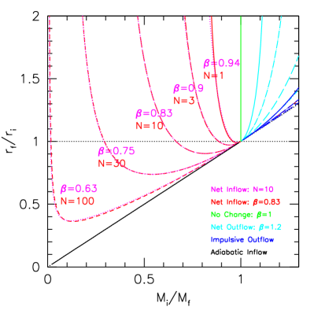
4.3.5 التغاير بين عدد الدورات ونسبة الجريان
يمكن الحصول على مسارات متشابهة جداً في مستوى كتلة-نصف قطر استجابة الهالة بتوليفات مختلفة من و (انظر الشكل 13). ويمكن توصيف هذا التغاير بمقارنة نسب الكتلة التي لا يحدث عندها تغير في أنصاف الأقطار: عندما ، و. لذلك إذا أردنا الإبقاء على عدد صحيح من الدورات، فمن المعقول التعبير عن بدلالة و ، ومن ثم . فعلى سبيل المثال إذا وضعنا ، نحصل على الحلول المتغايرة: . ويعني هذا التغاير أننا لا نستطيع استنتاج عدد الدورات ونسبة كسر التدفق الداخلي إلى الخارجي استنتاجاً وحيداً بالاعتماد على مسار المحاكيات في مستوى استجابة الهالة.
4.3.6 نموذج الخزان
يسمح لنا نموذج الخزان (Dekel & Mandelker, 2014) بالتعبير عن للمجرة بدلالة كفاءة تشكل النجوم عبر
| (22) |
حيث هو عامل الاختراق: =معدل التدفق الداخل إلى المجرة / معدل التدفق الداخل إلى الهالة. وبالنسبة إلى هالات عند ، يجد Dekel et al. (2013) أن . ومن أجل التبسيط نفترض هنا . وفي المستقبل، سنعاير ذلك بوصفه دالة في الكتلة والانزياح الأحمر في مقابل محاكياتنا. ويمكن أيضاً استخدام نموذج الخزان لربط خواص أخرى للتدفق الخارجي، مثل عامل تحميل الكتلة، باستجابة الهالة (انظر Dekel وآخرون ، قيد الإعداد).
4.3.7 المقارنة مع المحاكيات
تتحدد استجابة الهالة عند نصف قطر معطى بقيمة و عند ذلك النصف من القطر وبقيمة . لننظر في الحالة البسيطة لإزالة مقدار من الغاز من قرب مركز الهالة إلى ما وراء نصف القطر الفيريالي. وبما أن الكتلة المزالة ثابتة بينما تزداد الكتلة الكلية عند كل نصف قطر، فإن يتناقص رتيباً مع نصف القطر. ومن ثم يمكن تمثيل الاستجابة عند أنصاف أقطار مختلفة داخل الهالة بتغيير من عند أنصاف الأقطار الكبيرة إلى قيم أكبر حتى (حيث ينفجر في حد الاندفاع).
يعرض الشكل 13 النماذج من الشكل 12 في مستوى استجابة الهالة. وتعرض الخطوط الحمراء حالة ، أي ، مع تغيّر عدد الدورات من إلى . ويمتلك النموذج المبسط سلوكاً نوعياً مشابهاً للمحاكيات. ويمكننا فهم سبب وصول المسارات إلى قيمة صغرى في ثم ازديادها مع تناقص : فعند أنصاف الأقطار الأصغر (ومن ثم الأصغر) يكون كسر الغاز المحلي () أكبر، ومن ثم تكون آثار التدفقات الخارجة الاندفاعية أكبر من الآثار المقلصة للتدفقات الداخلة.
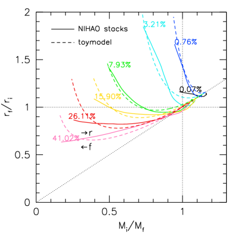
يقارن الشكل 14 متوسط استجابة الهالة للمجرات ذات كفاءة تشكل نجوم معطاة بنموذجنا المبسط. ونستخدم هنا نموذج الخزان لتحديد ونغير عدد دورات التدفق الداخلي والخارجي لمطابقة المحاكيات تقريباً. وبالنسبة إلى نجد . وباستخدام نموذج الخزان يمكننا استنتاج عوامل تحميل الكتلة باستخدام ، فنحصل على . وبالإضافة إلى ذلك، ومن أجل مطابقة المحاكيات عند ، نضيف حلقة من التمدد الأديباتي، مع ، تقابل فقداناً دائماً للغاز من النظام.
في التفصيل، تكون الآثار الممددة قوية جداً عند الصغيرة (أنصاف الأقطار الصغيرة). وقد يكون ذلك بسبب انهيار تقريب الاندفاع عند كسور غاز عالية، أو إذا كان عدد الدورات، ، أو نسبة التدفق الخارجي إلى الداخلي، ، يتغير مع نصف القطر، أو إذا كانت أو تتغير زمنياً على نحو عشوائي أو منهجي.
4.3.8 المقارنة مع Pontzen وGovernato (2012)
يعرض Pontzen & Governato (2012) نموذجاً لاستجابة هالة المادة المظلمة لكمون متقلب مصدره جريانات غازية تقودها المستعرات العظمى. وبافتراض كمون كروي من الشكل ، تعطي معادلتهم 6 كسب الطاقة بدلالة تغير الكمون
| (23) |
حيث إن المساواة الأخيرة تخص حالة القشرة المعزولة التي ندرسها، والتي تفترض ، ومن ثم عند نصف قطر ثابت.
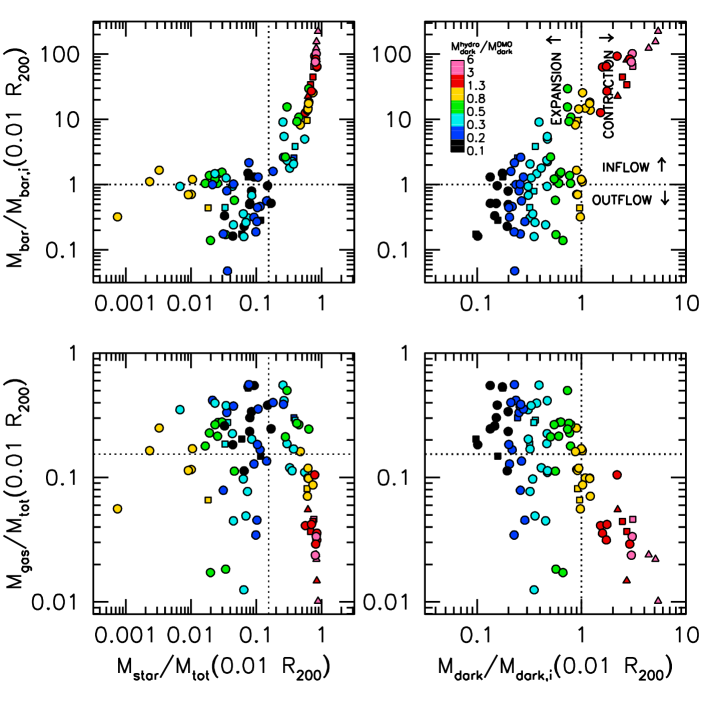
نشتق نتيجة مشابهة في سياق نموذجنا تحت افتراضات مشابهة. فمن مقارنة الطاقة المشتقة من مبرهنة فيريال قبل وبعد حلقة التدفق الداخلي الأديباتي والتدفق الخارجي الاندفاعي نحصل على: ، ومن ثم يكون تغير الطاقة . وبافتراض و صغيرين نحصل على . وبإعادة اشتقاق المعادلة للتدفقات الداخلة والخارجة الاندفاعية، نجد ، بما يتفق مع المعادلة (23). ويكون الأثر الكلي عند استخدام التدفقات الداخلة الاندفاعية أكبر لأنها تمتلك أثراً مقلصاً أضعف من التدفقات الداخلة الأديباتية.
5 المناقشة
نناقش الآن الأطوار المختلفة لاستجابة الهالة وكيف ترتبط بالخواص الفيزيائية للمجرات. ثم نقارن نتائجنا بما وُجد في الأدبيات.
5.1 التدفق الداخلي مقابل التدفق الخارجي
تعرض اللوحات العليا في الشكل 15 النسبة بين الكتلة الباريونية داخل في محاكيات hydro وDMO مقابل كسر الكتلة النجمية داخل (أعلى اليسار) والتغير في كتل المادة المظلمة داخل (أعلى اليمين). ورُمزت النقاط لونياً بحسب التغير في كتلة المادة المظلمة. ويقابل الأصفر عدم التغير، والأسود أقوى تمدد، والأرجواني أقوى تقلص. وتنقسم اللوحة العليا اليمنى إلى أربعة أرباع. فالربع السفلي الأيمن غير فيزيائي (مادة مظلمة متقلصة مع باريونات متمددة)، ومن المطمئن أن جميع المحاكيات تتجنب هذه المنطقة. أما الربع السفلي الأيسر فيمثل تمدداً في كل من المادة المظلمة والباريونات. والربع العلوي الأيسر هو عندما تتمدد المادة المظلمة مع وجود صافي تدفق داخلي من الباريونات، حيث يؤدي تدفق داخلي أكبر إلى تمدد أقل. ويستمر الاتجاه إلى الربع العلوي الأيمن حيث يؤدي تدفق داخلي أكبر إلى تقلص أكبر للمادة المظلمة. ويبدأ التقلص عندما تزداد الكتلة الباريونية بعامل . وعند هذه النقطة تبدأ الباريونات في السيطرة على ميزانية الكتلة الكلية عند أنصاف الأقطار الصغيرة.
تُظهر اللوحة العليا اليسرى أنه عند المنخفض لا يوجد تغير صاف في محتوى الباريونات. وبالنسبة إلى المتوسطة، توجد في الواقع باريونات أقل داخل مما لو كانت الباريونات تتبع محاكاة DMO. ومن ثم قُذف كسر مهم من الباريونات التي بردت. وربما ليس مفاجئاً أن تمتلك هذه المجرات أقوى تمدد. وفوق نرى صافي تدفق داخلي من الباريونات، وتبدأ النجوم في السيطرة على ميزانية الباريونات، ولذلك يوجد ارتباط وثيق بين المحورين.
5.2 دور الغاز
يلعب الغاز دوراً مهماً بطريقتين: (1) يقود تراكم الغاز التقلص؛ و(2) لا تسبب التدفقات الغازية الخارجة تمدداً مهماً إلا إذا كان كسر الغاز عالياً بما يكفي للسماح بـ (انظر الشكل 12). وتعرض اللوحات السفلى في الشكل 15 كسر الغاز مقابل كسر الكتلة النجمية (يساراً) ونسبة كتلة المادة المظلمة (يميناً). وتقاس جميع الكميات عند 1% من نصف القطر الفيريالي. ورُمزت النقاط لونياً بحسب نسبة كتلة المادة المظلمة. وبما أن كسر الغاز يمكن أن يتقلب بعنف على مقاييس زمنية صغيرة بسبب التغذية الراجعة من SN (مثلاً، Tollet et al., 2016)، نركز على كسور الغاز المتوسطة، التي ترتبط بكل من كفاءة تشكل النجوم واستجابة الهالة. وتحققنا من أن المجرات ذات تمدد الهالة وكسور الغاز المنخفضة داخل هي في الواقع غنية بالغاز، مع نسب كتلة غاز بارد إلى كتلة نجمية كلية تتجاوز 1. ولا يحدث التقلص إلا عندما يكون كسر الغاز منخفضاً ()، بينما يحدث أقوى تمدد عندما يكون كسر الغاز عالياً . وتتفق هذه الاتجاهات مع توقع نموذجنا المبسط.
5.3 دور تشكل النجوم
يلعب تشكل النجوم دورين: (1) يقود تشكل النجوم التمدد من خلال النجوم العالية الكتلة التي تتحول إلى مستعرات عظمى. (2) غير أن النجوم، لأنها عديمة التصادم، تسلك بعد تشكلها السلوك نفسه للمادة المظلمة وتُضاف فعلياً إلى الكمون الكلي. وستواجه حلقات تشكل النجوم اللاحقة كموناً أعمق، وتجد الهروب أصعب. وإذا لم يوجد إمداد جديد من الغاز، فإن انخفاض الغاز سيضعف أيضاً الآثار الممددة لأي تدفقات خارجة.
5.4 المقارنة مع نتائج سابقة
درس عدة مؤلفين استجابة الهالة في محاكيات كوسمولوجية لتكوّن المجرات ووجدوا تقلصاً في هالات كتلتها (Gnedin et al., 2004; Abadi et al., 2010; Pedrosa et al., 2010). وينبغي ملاحظة أن هذه الدراسات عانت من فرط التبريد وصغر أحجام العينات (لا تتضمن محاكيات Abadi et al. 2010 تشكل النجوم). لذلك ليس واضحاً مدى صلتها بالمجرات النموذجية. ومع ذلك، عندما تكون كفاءة تشكل النجوم عالية في محاكياتنا نجد أيضاً أن الهالات تتقلص بقوة، في اتفاق عام مع هذه الدراسات السابقة.
استخدم Di Cintio et al. (2014a) محاكيات MaGICC (Stinson et al., 2013) لدراسة ميول كثافة المادة المظلمة في 1-2 في المئة الداخلية من نصف القطر الفيريالي. ووجدوا اعتماداً لاخطياً بين الميل الداخلي ونسبة الكتلة النجمية إلى كتلة الهالة. وقد تأكدت هذه النتيجة بعينة أكبر من مجرات NIHAO (Tollet et al., 2016)، وبعينة صغيرة من مجرات أعلى دقة من FIRE (Chan et al., 2015). وبما أننا نستخدم المحاكيات نفسها، فإن نتائجنا متسقة مع Di Cintio et al. (2014a) وTollet et al. (2016). وبخطوة أبعد، يقدم Di Cintio et al. (2014b, DC14) ملمح كثافة للمادة المظلمة يعتمد على استناداً إلى 10 محاكاة ذات تغذية راجعة MaGICC مرجعية. وكما نوقش في §3.5، يرجح أن نموذج DC14 يبالغ في تقدير التمدد عند ويبالغ في تقدير التقلص عند ، مع أن الاعتماد النوعي لتقلص الهالة وتمددها على يبقى كما هو.
كوّن مشروع EAGLE (Schaye et al., 2015) مجرات ذات كفاءات معقولة لتشكل النجوم وأحجام مجرية معقولة عبر مجال واسع من الكتل. وعند النظر إلى متوسط ملامح الهالات في حاويات كتلة هالة من إلى ، يجد Schaller et al. (2015) فرقاً شبه معدوم في ملامح المادة المظلمة بين محاكيات hydro وDMO. وكما أشرنا في § 3.2، تمثل الدقة مسألة مهمة. فبالنسبة إلى هالات كتلتها (وهي المقياس الذي نجد عنده أكبر تمدد في محاكياتنا)، يبلغ نصف قطر التقارب لديهم 5% من نصف القطر الفيريالي. وبالنظر إلى الشكل 3 نجد تمدداً (أو تقلصاً) قليلاً جداً فوق هذا المقياس، ومن ثم فإن عدم وجود تمدد لديهم أمر متوقع. وعند مقياس كتلة درب التبانة ()، تجد محاكياتهم تغيراً ضئيلاً جداً في ملمح كتلة الهالة، كما نجد نحن. ولذلك قد تكون محاكياتنا المقابلة في الواقع أكثر اتساقاً مما يبدو للوهلة الأولى.
مصدر محتمل آخر للاختلافات في استجابة الهالة هو عتبة تشكل النجوم. يستخدم NIHAO وMaGICC بينما يتبنى EAGLE عتبة أدنى بكثير مقدارها . ويتوقع أن تؤدي العتبة الأدنى إلى تاريخ تشكل نجوم أكثر انتظاماً، مع اندفاعات نجمية أقل، ومن ثم أحداث تدفق خارجي أقل ذات عالٍ، وبالتالي تمدد أضعف. غير أن Dutton وآخرون (2015) وجدوا تمدد هالة يتبع نتائج NIHAO في أسلاف المجرات الإهليلجية الضخمة باستخدام عتبة cm-3، كما أن محاكيات FIRE (Chan et al., 2015) متسقة أيضاً مع NIHAO (من الأقزام إلى هالات كتلة درب التبانة) وتستخدم عتبة أعلى مقدارها cm-3. ولذلك لا تبدو استجابة الهالة حساسة بقوة لعتبة تشكل النجوم، على الأقل من أجل cm-3. ويلزم أن تُدرس بمزيد من التفصيل حساسية استجابة الهالة لنموذج دون الشبكة لتشكل النجوم والتغذية الراجعة.
6 الملخص
نستخدم من محاكيات التكبير الموضعي الكوسمولوجية الهيدروديناميكية من NIHAO وMaGICC وMUGS (Wang et al., 2015; Stinson et al., 2013, 2010) لاستقصاء استجابة هالات CDM لعمليات تكوّن المجرات الباريونية. ونعرّف استجابة الهالة بأنها التغير في ملامح كتلة المادة المظلمة، عند نصف قطر معطى، بين المحاكيات الهيدروديناميكية وعديمة التبدد. ونلخص نتائجنا كما يأتي:
-
•
يوجد تنوع أوسع بكثير في ملامح هالات المادة المظلمة في المحاكيات الهيدروديناميكية مقارنة بالمحاكيات عديمة التبدد (الشكل 2). ومن ثم تكسر استجابة الهالة لتكوّن المجرات الطبيعة الحرة المقياس لهالات CDM.
-
•
لا تُعدّل هالات المادة المظلمة تعديلاً مهماً إلا عند أنصاف أقطار أدنى من (الشكل 3)، ومن ثم تلزم دقة عالية بما يكفي لرؤية الآثار.
-
•
ترتبط استجابة الهالة بكتلة الهالة، ، والكتلة النجمية، ، والكفاءة المتكاملة لتشكل النجوم، ، وتراص المجرة، . ويمتلك الارتباط مع أصغر تشتت (0.15 dex)، بينما يوصف الارتباط مع تراص المجرة جيداً بقانون قدرة فوق (الشكل 4).
- •
-
•
يعتمد مسار المجرات في مستوى مقابل ضمن صياغة التقلص الأديباتي على (الشكل 10). وتمتلك المجرات ذات كفاءات تشكل النجوم العالية () تقلصاً قريباً من تقلص صياغة التقلص الأديباتي لدى Gnedin et al. (2004). وبالنسبة إلى الأدنى يكون التقلص أضعف تدريجياً، فيؤدي أولاً إلى تمدد عند الصغيرة، ثم عند جميع . وأخيراً، عندما تكون منخفضة جداً، تكون استجابة الهالة ضعيفة.
-
•
يمكن فهم مسارات المجرات في مستوى مقابل بواسطة نموذج مبسط يتألف من عدة دورات من التدفقات الداخلة الأديباتية يتبعها تدفقات خارجة اندفاعية (الشكل 14). وتؤدي التدفقات الداخلة الصرفة إلى تقلص، بينما تؤدي التدفقات الخارجة الصرفة إلى تمدد. وبالنسبة إلى كسور تدفق داخلي وخارجي متساوية، ، يكون الأثر الصافي تمدداً. أما في حالة صافي التدفق الداخلي، فيحدث التقلص عند الصغيرة (أي أنصاف الأقطار الكبيرة)، بينما يحدث التمدد عند الكبيرة (أي أنصاف الأقطار الصغيرة).
-
•
لكي يحدث تمدد مهم في الهالة ينبغي أن يكون كسر الغاز المحلي (الشكل 15). وحتى إذا توفرت طاقة كافية لقيادة تدفق خارجي، فإن عدم وجود غاز كاف سيجعل الآثار الممددة للتدفق الخارجي ضئيلة.
يمكن ربط نتائجنا بشأن استجابة الهالة لتكوّن المجرات بنتائج المحاكيات عديمة التبدد لصنع تنبؤات لبنية هالات CDM. وبما أن نموذجنا لتشكل النجوم والتغذية الراجعة ليس وحيداً بأي حال، فليس واضحاً في الوقت الحاضر ما إذا كانت صيغة الملاءمة التي نقدمها لاستجابة الهالة تنطبق على نماذج دون-شبكية أخرى. ولذلك فإن تنبؤاتنا لم تبلغ بعد المرحلة التي يمكن استخدامها فيها لدحض نموذج CDM. ومع ذلك، تشير الانتظامات الموجودة في محاكياتنا إلى أنه، على الرغم من العمليات الكثيرة المعقدة المتضمنة في تكوّن المجرات، قد يصبح قريباً من الممكن بناء نموذج تنبؤي كامل لبنية هالات CDM.
إن تحديد مقاييس الكتلة ونصف القطر التي تتفق / تختلف عندها نماذج دون الشبكة المختلفة في استجابة الهالة هو موضوع مهم للدراسات المستقبلية. كما سيكون من المثير للاهتمام إيجاد معاملات إضافية قابلة للرصد/النمذجة، إلى جانب و، ترتبط بها استجابة الهالة.
الشكر والتقدير
أُنجز هذا البحث على موارد الحوسبة عالية الأداء في New York University Abu Dhabi؛ وعلى عنقود theo التابع لـ Max-Planck-Institut für Astronomie وعنقود hydra في مركز الحوسبة في Garching؛ وعلى الحاسوب الفائق MW، الممول من Deutsche Forschungsgemeinschaft (DFG) عبر مركز البحث التعاوني (SFB 881) “نظام درب التبانة” (المشروع الفرعي Z2)، والذي يستضيفه ويموله جزئياً Jülich Supercomputing Center (JSC). ونقدّر بامتنان كبير إسهامات جميع هذه التخصيصات الحاسوبية. دُعم هذا العمل من Sonderforschungsbereich SFB 881 “نظام درب التبانة” (المشروعان الفرعيان A1 وA2) التابع لـ German Research Foundation (DFG). استفاد التحليل من حزمة pynbody (Pontzen et al., 2013). يقر AD بالدعم المقدم من منحة ISF 24/12، ومن برنامج I-CORE التابع لـ PBC - منحة ISF 1829/12، ومن منحة BSF 2014-273، ومن منح NSF AST-1010033 وAST-1405962. ويقر XK بالدعم من مشروع NSFC رقم 11333008 ومن برنامج الأولوية الاستراتيجية “نشوء البنى الكونية” التابع لـ CAS(No.XD09010000).
References
- Abadi et al. (2010) Abadi, M. G., Navarro, J. F., Fardal, M., Babul, A., & Steinmetz, M. 2010, MNRAS, 847
- Baldry et al. (2012) Baldry, I. K., Driver, S. P., Loveday, J., et al. 2012, MNRAS, 421, 621
- Behroozi et al. (2013) Behroozi, P. S., Wechsler, R. H., & Conroy, C. 2013, ApJ, 770, 57
- Blumenthal et al. (1986) Blumenthal, G. R., Faber, S. M., Flores, R., & Primack, J. R., 1986, ApJ, 301, 27
- Bovy & Rix (2013) Bovy, J., & Rix, H.-W. 2013, ApJ, 779, 115
- Brook et al. (2011) Brook, C. B., Governato, F., Roškar, R., et al. 2011, MNRAS, 415, 1051
- Brook et al. (2012) Brook, C. B., Stinson, G., Gibson, B. K., Wadsley, J., & Quinn, T. 2012, MNRAS, 424, 1275
- Brook et al. (2016) Brook, C. B., Santos-Santos, I., & Stinson, G. 2016, MNRAS, 459, 638
- Brooks & Christensen (2016) Brooks, A., & Christensen, C. 2016, Galactic Bulges, 418, 317
- Bullock et al. (2001) Bullock, J. S., Kolatt, T. S., Sigad, Y., Somerville, R. S., Kravtsov, A. V., Klypin, A. A., Primack, J. R., & Dekel, A. 2001, MNRAS, 321, 559
- Butsky et al. (2015) Butsky, I., Macciò, A. V., Dutton, A. A., et al. 2015, arXiv:1503.04814
- Chabrier (2003) Chabrier, G. 2003, PASP, 115, 763
- Chan et al. (2015) Chan, T. K., Kereš, D., Oñorbe, J., et al. 2015, MNRAS, 454, 2981
- Cole et al. (2011) Cole, D. R., Dehnen, W., & Wilkinson, M. I. 2011, MNRAS, 416, 1118
- Conroy & Wechsler (2009) Conroy, C., & Wechsler, R. H. 2009, ApJ, 696, 620
- Courteau & Dutton (2015) Courteau, S., & Dutton, A. A. 2015, ApJL, 801, L20
- Crain et al. (2015) Crain, R. A., Schaye, J., Bower, R. G., et al. 2015, MNRAS, 450, 1937
- Croton et al. (2006) Croton, D. J., Springel, V., White, S. D. M., et al. 2006, MNRAS, 365, 11
- de Blok et al. (2001) de Blok, W. J. G., McGaugh, S. S., Bosma, A., & Rubin, V. C. 2001, ApJL, 552, L23
- Dekel & Silk (1986) Dekel, A., & Silk, J. 1986, ApJ, 303, 39
- Dekel et al. (2003) Dekel, A., Devor, J., & Hetzroni, G. 2003, MNRAS, 341, 326
- Dekel et al. (2013) Dekel, A., Zolotov, A., Tweed, D., et al. 2013, MNRAS, 435, 999
- Dekel & Mandelker (2014) Dekel, A., & Mandelker, N. 2014, MNRAS, 444, 2071
- Diemer & Kravtsov (2015) Diemer, B., & Kravtsov, A. V. 2015, ApJ, 799, 108
- Di Cintio et al. (2014a) Di Cintio, A., Brook, C. B., Macciò, A. V., et al. 2014a, MNRAS, 437, 415
- Di Cintio et al. (2014b) Di Cintio, A., Brook, C. B., Dutton, A. A., Macciò, A. V., Stinson, G. S., Knebe, A. 2014b, MNRAS, 441, 2986
- Duffy et al. (2010) Duffy, A. R., Schaye, J., Kay, S. T., Dalla Vecchia, C., Battye, R. A., & Booth, C. M. 2010, MNRAS, 405, 2161
- Dutton et al. (2007) Dutton, A. A., van den Bosch, F. C., Dekel, A., & Courteau, S. 2007, ApJ, 654, 27
- Dutton (2009) Dutton, A. A. 2009, MNRAS, 396, 121
- Dutton et al. (2013a) Dutton, A. A., Treu, T., Brewer, B. J., et al. 2013, MNRAS, 428, 3183
- Dutton et al. (2013b) Dutton, A. A., Macciò, A. V., Mendel, J. T., & Simard, L. 2013, MNRAS, 432, 2496
- Dutton & Treu (2014) Dutton, A. A., & Treu, T. 2014, MNRAS, 438, 3594
- Dutton & Macciò (2014) Dutton, A. A., & Macciò, A. V. 2014, MNRAS, 441, 3359
- Dutton et al. (2015) Dutton, A. A., Macciò, A. V., Stinson, G. S., et al. 2015, MNRAS, 453, 2447
- Dutton et al. (2016) Dutton, A. A., Macciò, A. V., Frings, J., et al. 2016, MNRAS, 457, L74
- Einasto (1965) Einasto, J. 1965, Trudy Astrofizicheskogo Instituta Alma-Ata, 5, 87
- El-Zant et al. (2001) El-Zant, A., Shlosman, I., & Hoffman, Y. 2001, ApJ, 560, 636
- El-Zant et al. (2016) El-Zant, A., Freundlich, J., & Combes, F. 2016, arXiv:1603.00526
- Garrison-Kimmel et al. (2016) Garrison-Kimmel, S., Bullock, J. S., Boylan-Kolchin, M., & Bardwell, E. 2016, arXiv:1603.04855
- Gill et al. (2004) Gill, S. P. D., Knebe, A., & Gibson, B. K. 2004, MNRAS, 351, 399
- Gnedin et al. (2004) Gnedin, O. Y., Kravtsov, A. V., Klypin, A. A., & Nagai, D. 2004, ApJ, 616, 16
- Goerdt et al. (2006) Goerdt, T., Moore, B., Read, J. I., Stadel, J., & Zemp, M. 2006, MNRAS, 368, 1073
- Governato et al. (2012) Governato, F., Zolotov, A., Pontzen, A., et al. 2012, MNRAS, 422, 1231
- Gustafsson et al. (2006) Gustafsson, M., Fairbairn, M., & Sommer-Larsen, J. 2006, PhysRevD, 74, 123522
- Gutcke et al. (2016) Gutcke, T. A., Stinson, G. S., Macciò, A. V., Wang, L., & Dutton, A. A. 2016, arXiv:1602.06956
- Hammer et al. (2007) Hammer, F., Puech, M., Chemin, L., Flores, H., & Lehnert, M. D. 2007, ApJ, 662, 322
- Hopkins et al. (2014) Hopkins, P. F., Kereš, D., Oñorbe, J., et al. 2014, MNRAS, 445, 581
- Hudson et al. (2015) Hudson, M. J., Gillis, B. R., Coupon, J., et al. 2015, MNRAS, 447, 298
- Jardel & Sellwood (2009) Jardel, J. R., & Sellwood, J. A. 2009, ApJ, 691, 1300
- Johansson et al. (2009) Johansson, P. H., Naab, T., & Ostriker, J. P. 2009, ApJL, 697, L38
- Keller et al. (2014) Keller, B. W., Wadsley, J., Benincasa, S. M., & Couchman, H. M. P. 2014, MNRAS, 442, 3013
- Klypin et al. (2011) Klypin, A. A., Trujillo-Gomez, S., & Primack, J. 2011, ApJ, 740, 102
- Knollmann & Knebe (2009) Knollmann, S. R., & Knebe, A. 2009, ApJS, 182, 608
- Kravtsov (2013) Kravtsov, A. V. 2013, ApJL, 764, L31
- Kroupa et al. (1993) Kroupa, P., Tout, C. A., & Gilmore, G. 1993, MNRAS, 262, 545
- Leauthaud et al. (2012) Leauthaud, A., Tinker, J., Bundy, K., et al. 2012, ApJ, 744, 159
- Ludlow et al. (2016) Ludlow, A. D., Bose, S., Angulo, R. E., et al. 2016, MNRAS, 460, 1214
- Macciò et al. (2008) Macciò, A. V., Dutton, A. A., & van den Bosch, F. C. 2008, MNRAS, 391, 1940
- Macciò et al. (2012) Macciò, A. V., Stinson, G., Brook, C. B., et al. 2012, ApJL, 744, L9
- Macciò et al. (2015) Macciò, A. V., Mainini, R., Penzo, C., & Bonometto, S. A. 2015, MNRAS, 453, 1371
- Maller & Dekel (2002) Maller, A. H., & Dekel, A. 2002, MNRAS, 335, 487
- Marinacci et al. (2014) Marinacci, F., Pakmor, R., & Springel, V. 2014, MNRAS, 437, 1750
- Martizzi et al. (2012) Martizzi, D., Teyssier, R., Moore, B., & Wentz, T. 2012, MNRAS, 422, 3081
- Martizzi et al. (2013) Martizzi, D., Teyssier, R., & Moore, B. 2013, MNRAS, 432, 1947
- Mashchenko et al. (2006) Mashchenko, S., Couchman, H. M. P., & Wadsley, J. 2006, Natur, 442, 539
- Mashchenko et al. (2008) Mashchenko, S., Wadsley, J., & Couchman, H. M. P. 2008, Science, 319, 174
- Moster et al. (2010) Moster, B. P., Somerville, R. S., Maulbetsch, C., et al. 2010, ApJ, 710, 903
- More et al. (2011) More, S., van den Bosch, F. C., Cacciato, M., Skibba, R., Mo, H. J., & Yang, X. 2011, MNRAS, 410, 210
- Navarro et al. (1996) Navarro, J. F., Eke, V. R., & Frenk, C. S. 1996, MNRAS, 283, L72
- Navarro et al. (1997) Navarro, J. F., Frenk, C. S., & White, S. D. M. 1997, ApJ, 490, 493 (NFW)
- Navarro et al. (2010) Navarro, J. F., et al. 2010, MNRAS, 402, 21
- Newman et al. (2013) Newman, A. B., Treu, T., Ellis, R. S., & Sand, D. J. 2013, ApJ, 765, 25
- Obreja et al. (2014) Obreja, A., Brook, C. B., Stinson, G., et al. 2014, MNRAS, 442, 1794
- Obreja et al. (2016) Obreja, A., Stinson, G. S., Dutton, A. A., et al. 2016, MNRAS, 459, 467
- Oh et al. (2011) Oh, S.-H., de Blok, W. J. G., Brinks, E., Walter, F., & Kennicutt, R. C., Jr. 2011, AJ, 141, 193
- Pagels & Primack (1982) Pagels, H., & Primack, J. R. 1982, Physical Review Letters, 48, 223
- Pedrosa et al. (2010) Pedrosa, S., Tissera, P. B., & Scannapieco, C. 2010, MNRAS, 402, 776
- Peñarrubia et al. (2016) Peñarrubia, J., Gómez, F. A., Besla, G., Erkal, D., & Ma, Y.-Z. 2016, MNRAS, 456, L54
- Planck Collaboration et al. (2014) Planck Collaboration, Ade, P. A. R., Aghanim, N., et al. 2014, A&A, 571, A16
- Pontzen & Governato (2012) Pontzen, A., & Governato, F. 2012, MNRAS, 421, 3464
- Pontzen et al. (2013) Pontzen, A., Roškar, R., Stinson, G., & Woods, R. 2013, Astrophysics Source Code Library, 1305.002
- Power et al. (2003) Power, C., Navarro, J. F., Jenkins, A., et al. 2003, MNRAS, 338, 14
- Read & Gilmore (2005) Read, J. I., & Gilmore, G. 2005, MNRAS, 356, 107
- Reddick et al. (2013) Reddick, R. M., Wechsler, R. H., Tinker, J. L., & Behroozi, P. S. 2013, ApJ, 771, 30
- Romano-Díaz et al. (2008) Romano-Díaz, E., Shlosman, I., Hoffman, Y., & Heller, C. 2008, ApJL, 685, L105
- Sawala et al. (2016) Sawala, T., Frenk, C. S., Fattahi, A., et al. 2016, MNRAS, 457, 1931
- Schaller et al. (2015) Schaller, M., Frenk, C. S., Bower, R. G., et al. 2015, MNRAS, 451, 1247
- Schaye et al. (2015) Schaye, J., Crain, R. A., Bower, R. G., et al. 2015, MNRAS, 446, 521
- Sellwood (2008) Sellwood, J. A. 2008, ApJ, 679, 379
- Shen et al. (2010) Shen, S., Wadsley, J., & Stinson, G. 2010, MNRAS, 407, 1581
- Somerville et al. (2008) Somerville, R. S., Hopkins, P. F., Cox, T. J., Robertson, B. E., & Hernquist, L. 2008, MNRAS, 391, 481
- Sonnenfeld et al. (2015) Sonnenfeld, A., Treu, T., Marshall, P. J., et al. 2015, ApJ, 800, 94
- Spergel & Steinhardt (2000) Spergel, D. N., & Steinhardt, P. J. 2000, Physical Review Letters, 84, 3760
- Spergel et al. (2007) Spergel, D. N., Bean, R., Doré, O., et al. 2007, ApJS, 170, 377
- Stadel et al. (2009) Stadel, J., Potter, D., Moore, B., et al. 2009, MNRAS, 398, L21
- Stinson et al. (2006) Stinson, G., Seth, A., Katz, N., et al. 2006, MNRAS, 373, 1074
- Stinson et al. (2010) Stinson, G. S., Bailin, J., Couchman, H., et al. 2010, MNRAS, 408, 812
- Stinson et al. (2013) Stinson, G. S., Brook, C., Macciò, A. V., et al. 2013, MNRAS, 428, 129
- Stinson et al. (2015) Stinson, G. S., Dutton, A. A., Wang, L., et al. 2015, MNRAS, 454, 1105
- Swaters et al. (2003) Swaters, R. A., Madore, B. F., van den Bosch, F. C., & Balcells, M. 2003, ApJ, 583, 732
- Tissera et al. (2010) Tissera, P. B., White, S. D. M., Pedrosa, S., & Scannapieco, C. 2010, MNRAS, 406, 922
- Tollet et al. (2016) Tollet, E., Macciò, A. V., Dutton, A. A., et al. 2016, MNRAS, 456, 3542
- Trujillo-Gomez et al. (2015) Trujillo-Gomez, S., Klypin, A., Colín, P., et al. 2015, MNRAS, 446, 1140
- Vogelsberger et al. (2014) Vogelsberger, M., Genel, S., Springel, V., et al. 2014, MNRAS, 444, 1518
- Wadsley et al. (2004) Wadsley, J. W., Stadel, J., & Quinn, T. 2004, NewA, 9, 137
- Walker & Peñarrubia (2011) Walker, M. G., & Peñarrubia, J. 2011, ApJ, 742, 20
- Wang et al. (2015) Wang, L., Dutton, A. A., Stinson, G. S., Macciò, A. V., Penzo, C., Kang, X., Keller, B. W., Wadsley, J. 2015, MNRAS, 454, 83
- Wang et al. (2016) Wang, L., Dutton, A. A., Stinson, G. S., et al. 2016, arXiv:1601.00967
- Weinberg & Katz (2002) Weinberg, M. D., & Katz, N. 2002, ApJ, 580, 627
- Zhao et al. (2009) Zhao, D. H., Jing, Y. P., Mo, H. J., Börner, G. 2009, ApJ, 707, 354